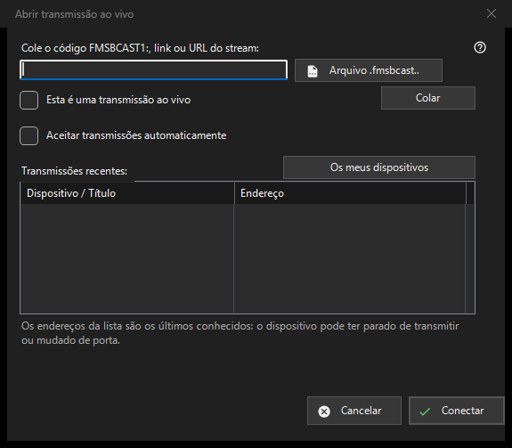

Transmissão ao vivo
Finalidade
Cole um código FMSBCAST1:, link ou URL do fluxo, ou escolha um arquivo .fmsbcast. Marque uma URL comum como ao vivo apenas para uma fonte ao vivo; caso contrário ela abre sob demanda. Pressione Conectar e informe a senha do espectador se solicitada. Um endereço recente pode falhar após a parada do produtor ou mudança de porta. A aceitação automática de Cast é uma escolha explícita separada.


Nesta ordem
Cole um código FMSBCAST1:, link ou URL do fluxo, ou escolha um arquivo .fmsbcast. Marque uma URL comum como ao vivo apenas para uma fonte ao vivo; caso contrário ela abre sob demanda. Pressione Conectar e informe a senha do espectador se solicitada. Um endereço recente pode falhar após a parada do produtor ou mudança de porta. A aceitação automática de Cast é uma escolha explícita separada.
Os elementos
FMSBCAST1: / .fmsbcast
Cole um código FMSBCAST1:, link ou URL do fluxo, ou escolha um arquivo .fmsbcast. Marque uma URL comum como ao vivo apenas para uma fonte ao vivo; caso contrário ela abre sob demanda. Pressione Conectar e informe a senha do espectador se solicitada. Um endereço recente pode falhar após a parada do produtor ou mudança de porta. A aceitação automática de Cast é uma escolha explícita separada.
Definições do gestor · Definições de partilha SFTP · Definições do servidor de troca